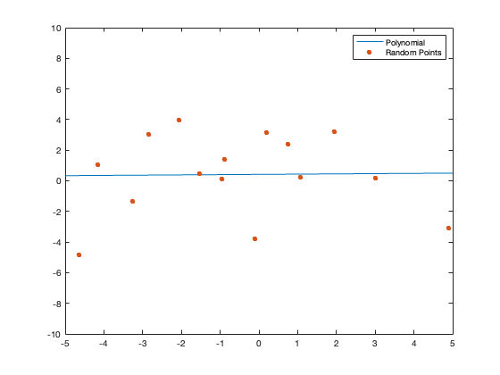
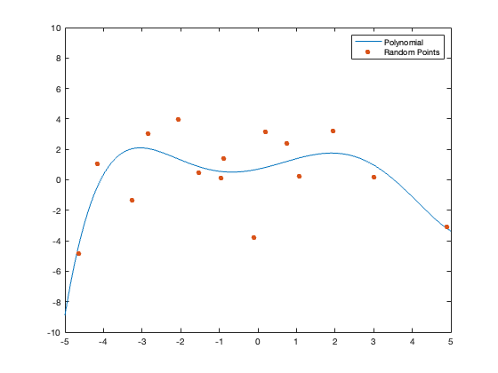
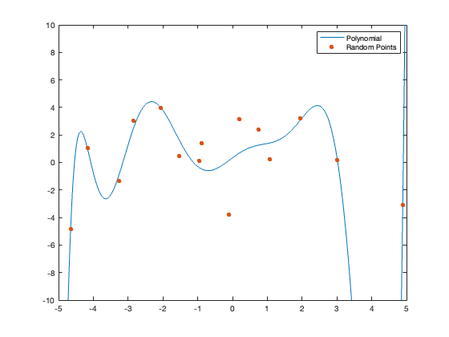

clear all
close all
n_points = 15;
x=[-0.9504;-3.2643;0.7518;1.0622;-2.8555;0.1993;4.8919;-0.1008;1.9487;-0.8858;-4.6522;-2.0717;3.0144;-1.5350;-4.1668];
y=[0.1111;-1.3317;2.3948;0.2474;3.0452;3.1691;-3.1053;-3.7631;3.2100;1.3790;-4.8388;3.9595;0.1538;0.4452;1.0644];
points=[x y];
degrees = [1, 5, 10];
errors = zeros(1, numel(degrees));
for i = 1:numel(degrees)
degree = degrees(i);
A = ones(n_points, degree + 1);
for j = 2:(degree + 1)
A(:, j) = x.^(j - 1);
end
x_ans=inv(A'*A)*A'*y;
y_fit = A * x_ans;
errors(i) = norm(y-y_fit);
polynomialpointsx = [];
polynomialpointsy = [];
for i=-5:0.01:5
polynomialpointsx = [polynomialpointsx i];
for j = 2:(degree + 1)
pointspoly(j) = i.^(j - 1);
end
polynomialpointsy = [polynomialpointsy x_ans(1)+sum(sum(pointspoly*x_ans))];
end
figure
plot(polynomialpointsx,polynomialpointsy)
ylim([-10 10])
hold on
scatter(x,y,"filled","o")
legend('Polynomial', 'Random Points')
end
[min_error, best_fit_index] = min(errors);
best_degree = degrees(best_fit_index);
for i=1:length(degrees)
fprintf('Error of degree %d is %.4f.\n', degrees(i), errors(i));
end
fprintf('The best fitting polynomial has degree %d with least squares error %.4f.\n', best_degree, min_error);
Error of degree 1 is 10.0406.
Error of degree 5 is 7.2987.
Error of degree 10 is 5.4631.
The best fitting polynomial has degree 10 with least squares error 5.4631.
  